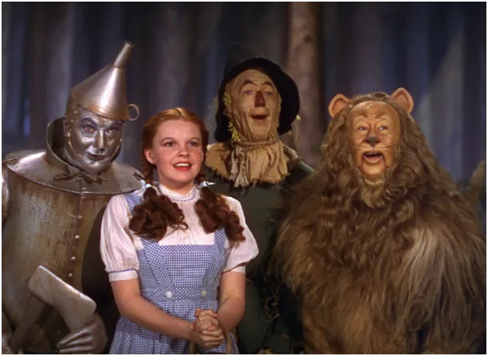
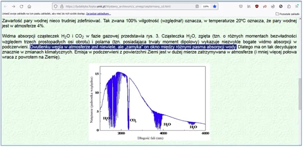
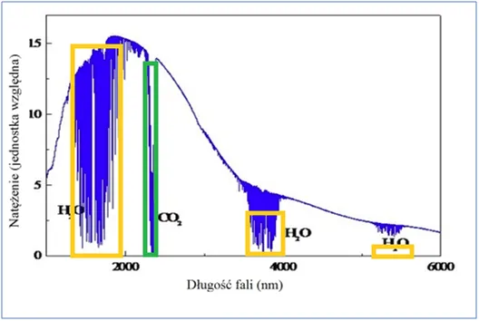

Czekamy na wyjaśnienia z Uniwersytetu im. Mikołaja Kopernika albo mianujemy nowego Czarnoksiężnika z krainy Oz.
Poniżej wykres, który jest gwoździem do trumny carbo-frustratów, dlatego do tego wykresu dopisywane są różne dziwne wyjaśnienia. Autor tego artykułu podpisał się GK, ale czekam na informację z uczelni kto to jest i postaram się, aby wyjaśnił, co miał na myśli pisząc, że:
"Dwutlenku węgla w atmosferze jest niewiele, ale „zamyka” on okno między różnymi pasma absorpcji wody. Dlatego ma on tak decydujące znacznie w zmianach klimatycznych."
Atmosfera jako mieszanka gazów nie ma żadnych okien. Swobodnie latające cząsteczki mają identyczne szanse absorpcji podczerwieni. Pary wodnej w atmosferze jest ok. 100 raz więcej niż CO2 a jej zdolność do absorpcji ciepłą w postaci podczerwieni jest jak proporcja pół żółtych do zielonego, czyli z szacunkowego oglądu siatki nałożonej na wykres grubo ponad 10 razy (uwzględniłem zależność ilości energii od długości fali). Czyli mamy przynajmniej 1000-krotnie większy udział cząsteczek pary wodnej w efekcie cieplarnianym niż CO2.


Mam nadzieję, że autor się odezwie i będzie mógł na forum wyjaśnić fenomen "zamykania okna". Jestem otwarty i chętnie porzucę swoje błędne przekonanie o losowym, czyli proporcjonalnym pobieraniu energii cieplnej z podczerwieni przez mieszaninę gazów. Proszę osoby kompetentne o kontakt i dyskusję, która doprowadzi nas do zorganizowania konferencji naukowej, na której wyjaśnimy wątpliwości w sprawie obiegu ciepła na naszej planecie.
W innym wypadku otrzyma zaszczytny tytuł "Czarnoksiężnika z krainy Oz", wtedy dzieci, które uczy będą jeszcze bardziej zasłuchane w jego nauki.
Paweł Klimczewski